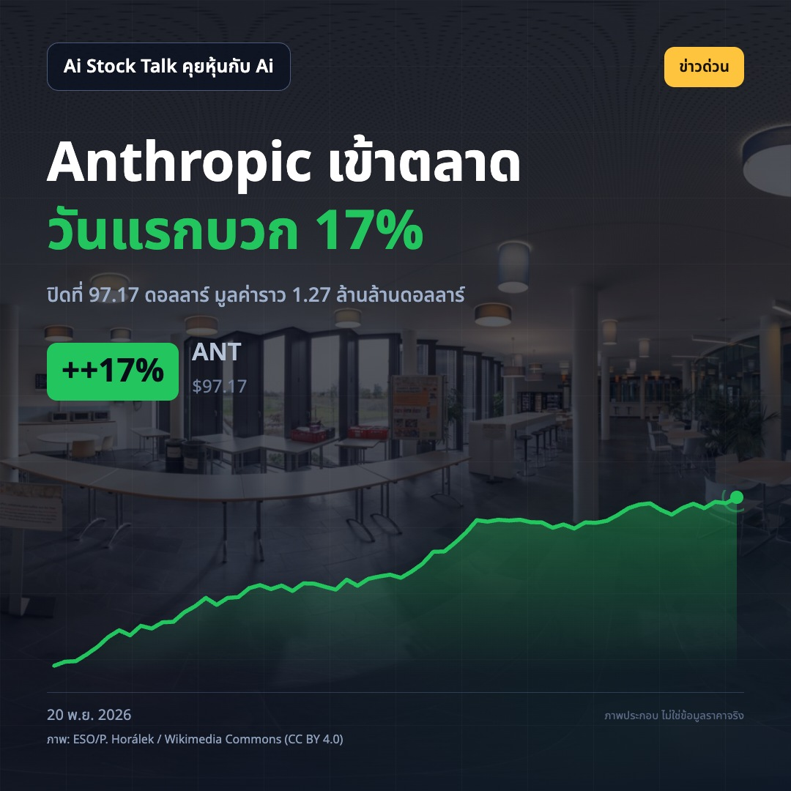
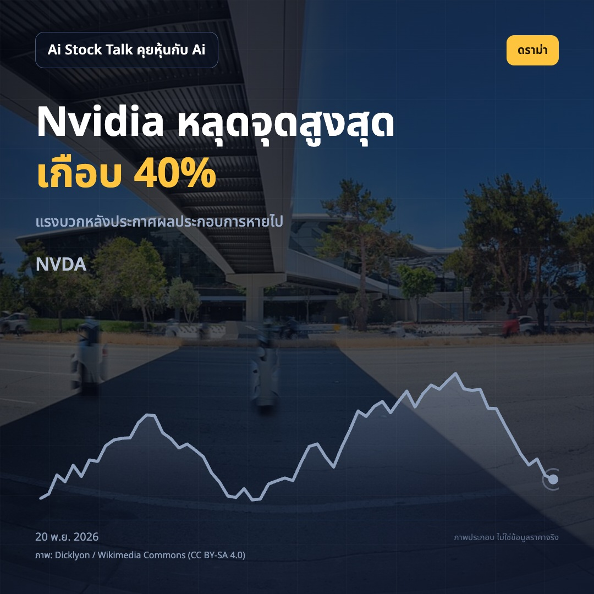

1. Anthropic เข้าตลาดวันแรก หุ้นปิดบวก 17%

Anthropic เข้า Nasdaq วันแรก ปิดบวก 17% หุ้น ANT ตั้งราคาเสนอขายที่ 83 ดอลลาร์ ระหว่างวันขึ้นสูงสุด 111.50 ดอลลาร์ ก่อนปิดที่ 97.17 ดอลลาร์ มูลค่าบริษัทตามราคาหุ้นอยู่ราว 1.27 ล้านล้านดอลลาร์ และกลายเป็นบริษัทมูลค่าสูงอันดับ 12 ของโลก การเข้าตลาดครั้งนี้ทำให้หุ้นบริษัทผู้พัฒนาโมเดล AI มีราคาซื้อขายให้เทียบกับหุ้นเทคขนาดใหญ่โดยตรง ทำไมต้องสน: คนที่ถือหุ้น AI ต้องดูว่าตลาดให้ค่ากับผู้พัฒนาโมเดลอย่างไร และหุ้นที่ถืออยู่มีความคาดหวังสูงแค่ไหน คุณคิดว่าราคา ANT วันแรกสะท้อนโอกาสของ AI หรือความคาดหวังที่สูงเกินไป? ที่มา: https://www.blognone.com/node/152212
Anthropic #หุ้นAI #หุ้นสหรัฐ
ภาพ: ESO/P. Horálek / Wikimedia Commons (CC BY 4.0)
2. Nvidia ต่ำกว่าจุดสูงสุดเกือบ 40% ขณะ Anthropic เข้าตลาด

Nvidia อยู่แถว 150 ดอลลาร์ หลังหลุดจากจุดสูงสุดเกือบ 40% หุ้น Nvidia ลดลงจากจุดสูงสุดเมื่อ 6 ตุลาคมเกือบ 40% ตามรายงานที่ระบุว่าราคาอยู่แถว 150 ดอลลาร์ แรงบวกช่วงสั้นหลังประกาศผลประกอบการหายไปภายในวันพฤหัสบดี ในเวลาเดียวกัน หุ้น Anthropic เริ่มซื้อขายใน Nasdaq ที่ 111.50 ดอลลาร์ สูงกว่าราคาเสนอขาย 34% ทำไมต้องสน: นักลงทุนที่ถือหุ้นชิป AI กำลังเห็นตลาดให้ราคาผู้พัฒนาโมเดลกับผู้ขายชิปต่างกัน แม้ทั้งสองอยู่ในกระแสเดียวกัน ในพอร์ตของคุณ หุ้นชิปยังมีน้ำหนักเท่าเดิมหรือเปลี่ยนไปแล้ว? ที่มา: https://www.theverge.com/ai-artificial-intelligence/1038063/nvidia-stock-market-price-earnings
Nvidia #หุ้นชิป #หุ้นAI
ภาพ: Dicklyon / Wikimedia Commons (CC BY-SA 4.0)
3. AMD ปิดลบมากกว่า 7% หลังเจอข้อกล่าวหาเรื่องจีน

AMD ปิดลบมากกว่า 7% หลังถูกกล่าวหาเรื่องบริษัทจีนในบัญชีดำ ผู้ขายชอร์ตกล่าวหาว่าพบเฟิร์มแวร์ของ AMD ในบริษัทจีนที่อยู่ในบัญชีดำ AMD ระบุว่าบริษัทปฏิบัติตามกฎหมายสหรัฐฯ ขณะที่หุ้นปิดลดลงมากกว่า 7% ข้อมูลในรายการข่าวยังเป็นข้อกล่าวหาและคำชี้แจงของบริษัท ยังไม่มีผลสรุปว่าบริษัททำผิด ทำไมต้องสน: ความเสี่ยงด้านจีนและข้อจำกัดการส่งออกอาจกระทบการประเมินมูลค่าหุ้นชิป แม้ก่อนมีข้อยุติ ถ้าถือ AMD อยู่ คุณจะรอข้อมูลอะไรเพิ่มเติมก่อนตัดสินใจ? ที่มา: https://www.cnbc.com/2026/11/19/amd-falls-on-short-seller-report-of-alleged-china-exposure.html
AMD #หุ้นชิป #ตลาดหุ้นสหรัฐ
ภาพ: Bruno Corpet (Quoique) / Wikimedia Commons (CC BY-SA 3.0)
4. สหรัฐฯ อนุมัติขายชิป AI ให้บริษัทจีนกว่า 879,000 ตัว

สหรัฐฯ อนุมัติขายชิป AI ให้บริษัทจีนมากกว่า 879,000 ตัว สมาชิกสภาคองเกรสระบุว่ากระทรวงพาณิชย์สหรัฐฯ อนุมัติการขายชิป AI จำนวนดังกล่าว ขณะเดียวกัน สมาชิกสภากำลังผลักดันกฎหมายเพื่อเพิ่มความเข้มงวดของการควบคุมส่งออกชิปไปจีน ข่าวนี้วางโอกาสขายชิปกับความเสี่ยงด้านกฎระเบียบไว้ในเรื่องเดียวกัน ทำไมต้องสน: คนถือหุ้นผู้ผลิตชิปต้องติดตามว่าการอนุมัติที่มีอยู่และกฎใหม่จะกำหนดตลาดจีนอย่างไร คุณคิดว่าปัจจัยไหนสำคัญกว่าต่อหุ้นชิปในระยะต่อไป ยอดขายหรือความเข้มงวดของกฎ? ที่มา: https://www.cnbc.com/2026/11/19/nvidia-amd-china-chip-sales-congress.html
ชิปAI #หุ้นชิป #จีน
ภาพ: Dicklyon / Wikimedia Commons (CC BY-SA 4.0)
5. หุ้นสหรัฐฯ ลงครบ 11 กลุ่มอุตสาหกรรม หุ้นไซเบอร์สวนทาง

หุ้นสหรัฐฯ ลงครบ 11 กลุ่ม แต่หุ้นไซเบอร์สวนตลาด ดัชนี S&P 500 มีทั้ง 11 กลุ่มอุตสาหกรรมปรับลง และ 10 กลุ่มลดลงมากกว่า 1% หุ้นกลุ่มไซเบอร์ซีเคียวริตี้กลับยืนสวนทางความอ่อนแรงของตลาด ภาพนี้เกิดในวันที่หุ้น Anthropic เข้าตลาด แต่การเปิดตัวดังกล่าวไม่ได้พาหุ้นเทคทั้งกลุ่มขึ้นตาม ทำไมต้องสน: คนไทยที่ลงทุนผ่านกองทุนหุ้นสหรัฐฯ หรือถือหุ้นเทคหลายตัว อาจเจอแรงกดดันพร้อมกันจากตลาดวงกว้าง คุณมองหุ้นไซเบอร์เป็นจุดพักเงิน หรืออยากรอดูตลาดอีกวัน? ที่มา: https://www.marketwatch.com/story/these-were-the-only-stocks-that-rose-amid-the-stock-markets-wipeout-thursday-1eaf32ba?mod=mw_rss_topstories https://www.marketwatch.com/story/after-anthropics-bittersweet-ipo-heres-what-lies-ahead-8c32fdb7?mod=mw_rss_topstories
หุ้นสหรัฐ #หุ้นไซเบอร์ #พอร์ตลงทุน
ภาพ: Diliff / Wikimedia Commons (CC BY 2.5)
6. ผู้ร่วมก่อตั้ง CoreWeave ลงเงิน 30 ล้านดอลลาร์ในพันธบัตรบริษัท

ผู้ร่วมก่อตั้ง CoreWeave ลงเงิน 30 ล้านดอลลาร์ในพันธบัตรบริษัท Brian Venturo ผู้ร่วมก่อตั้ง CoreWeave เลือกเข้าซื้อพันธบัตรของบริษัทที่ถูกกดดันด้านราคา รายงานระบุว่าโดยปกติผู้บริหารมักซื้อหุ้นเพื่อส่งสัญญาณความเชื่อมั่น แต่ครั้งนี้เขาเลือกตลาดตราสารหนี้ ความเคลื่อนไหวเกิดขึ้นท่ามกลางความกังวลของตลาดต่อธุรกิจ AI ทำไมต้องสน: คนที่ลงทุนในบริษัทโครงสร้างพื้นฐาน AI ควรติดตามต้นทุนเงินทุนและความเชื่อมั่นในหนี้ควบคู่ราคาหุ้น คุณคิดว่าการเลือกซื้อพันธบัตรแทนหุ้นส่งสัญญาณอะไร? ที่มา: https://www.marketwatch.com/story/a-coreweave-co-founder-just-made-an-unconventional-30-million-wager-on-its-battered-bonds-5586b0e9?mod=mw_rss_topstories
CoreWeave #หุ้นAI #พันธบัตร
ภาพ: Marek Ślusarczyk (Tupungato) Photo portfolio / Wikimedia Commons (CC BY 3.0)